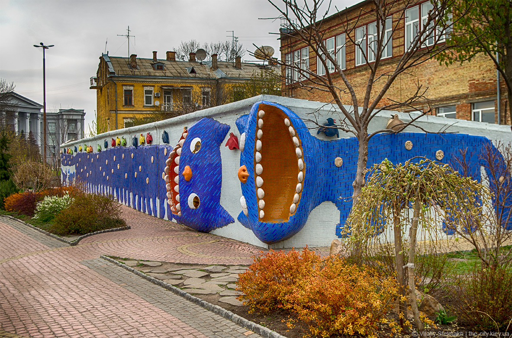

Пейзажна алея
Зона відпочинку в Києві, прокладена по місцю розташування зритих оборонних валів Верхнього міста,
які йшли понад яром, над урочищем Гончарі. Створена у рамках підготовки до святкування 1500-річчя Києва у 1982 році.
